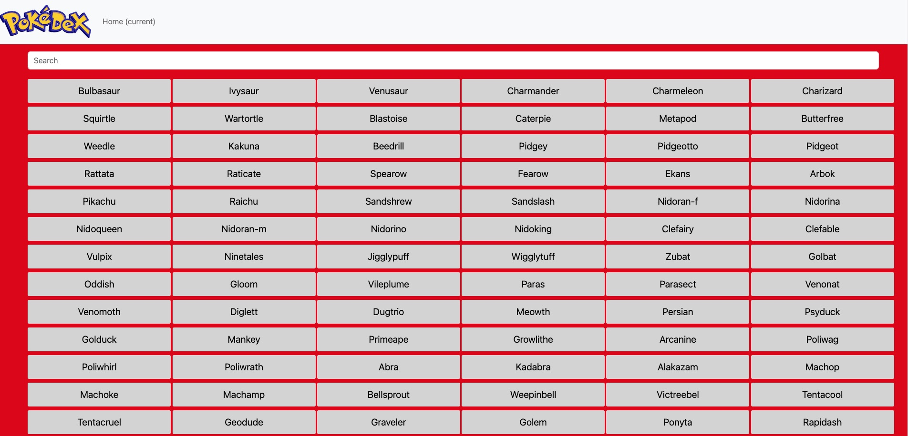

Pokedex App Case Study
Overview
The Pokedex App is a web-based JavaScript app built with HTML, CSS, and JavaScript, which uses an external API.

Purpose & Context
This project was created as part of my web development course at CareerFoundry to demonstrate my mastery of frontend web development using HTML, CSS, and JavaScript and using an external API.
Objective
To build a small web application with HTML, CSS, and JavaScript that loads data from an external API and enables the viewing of data points in detail.


When, Who, How
Duration
This project was created as part of my web development course at CareerFoundry to demonstrate my mastery of frontend web development using HTML, CSS, and JavaScript and using an external API.
Credits
- Lead Developer: Julio Gutierrez
- Tutor: James Katarikawe
- Mentor: Sebastin Kolman
Methodologies
- JavaScript
- HTML
- CSS
Process
Learn
One goal of the project was to learn about JavaScript, set up the general outline of the app, and learn coding practices focused on the core principles like objects, arrays, conditionals, and loops.
Build
I set up a general dataset for the application to display for the user. Putting the JavaScript principles into practice, I added JavaScript functions, implemented a forEach loop to print details on each item in the app’s repository, and manipulated a programming interface for HTML, DOM, in order to create fluid user interfaces.
API
Using Ajax principles so that the app can load data asynchronously, I included a fetch function to pull data from an external data source, the Pokemon API. Using fetch returns a promise, which aren’t supported by older browsers. I also added polyfills to support any older browsers being used to access the app.
UI Elements
I added complex UI patterns, such as a modal, in order to display details when a Pokemon is clicked on. This small window includes information such as an image of the Pokemon, their height, weight, and what type of Pokemon they are.
Reflection
How It Went
Overall I think the project went well. It is different from the initial vision I had when reading the project brief, but it’s close. I enjoyed connecting the app to an existing database and focusing on the look and interface of the app.
Challenges
The biggest challenge was working with the modals. I struggled at first to get it to show what I wanted, but with the help of my tutor and troubleshooting on my own through resources online, I was able to get it to display what I wanted and how I wanted.
Next Time
I want to improve on the app by making the interface appear like the Pokedex from the cartoon and for the buttons to allow someone to search or scroll through the Pokemon in the database and to add the ability to sort by a variety of attributes.